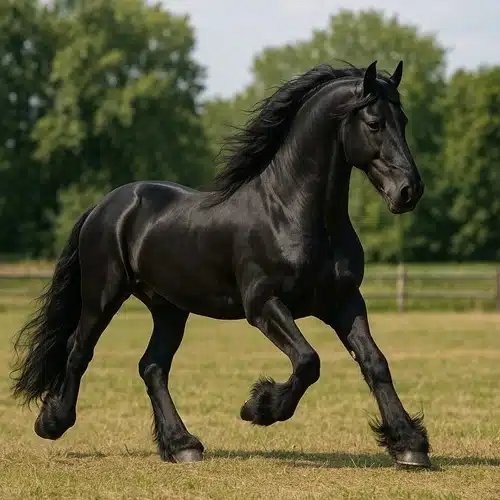
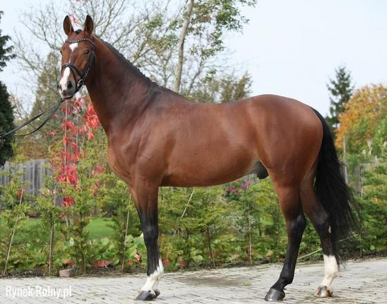
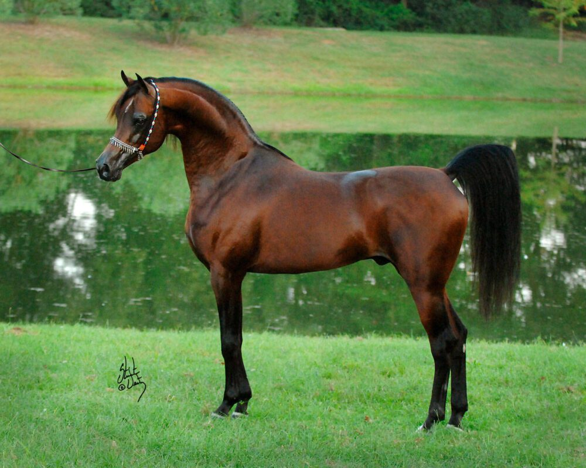

Koń fryzyjski
Koń fryzyjski pochodzi z Holandii i jest jedną z najbardziej rozpoznawalnych ras na świecie.
Charakteryzuje się czarną maścią, długą falującą grzywą oraz obfitymi szczotkami pęcinowymi.
Osiąga wysokość od 155 do 170 cm w kłębie. Jest spokojny, inteligentny i chętny do współpracy z człowiekiem.
Dzięki swojemu efektownemu wyglądowi często występuje w filmach, pokazach historycznych oraz zawodach zaprzęgowych.


Koń pełnej krwi angielskiej
Rasa ta została wyhodowana w Anglii z myślą o wyścigach konnych. Konie pełnej krwi angielskiej są lekkie, szybkie i bardzo energiczne.
Zazwyczaj osiągają wysokość od 155 do 175 cm w kłębie. Najczęściej spotykane są maści gniade, kasztanowate i ciemnogniade.
Dzięki swojej szybkości konie te dominują na torach wyścigowych, a także są wykorzystywane w wielu dyscyplinach sportowych.
Koń arabski
Koń arabski jest jedną z najstarszych i najbardziej cenionych ras koni na świecie.
Pochodzi z Półwyspu Arabskiego i od wieków był hodowany przez plemiona beduińskie.
Wyróżnia się elegancką sylwetką, charakterystyczną głową o lekko wklęsłym profilu oraz niezwykłą wytrzymałością.
Osiąga wysokość od 145 do 155 cm w kłębie. Najczęściej występuje w maści siwej, gniadej lub kasztanowatej.
Obecnie konie arabskie są wykorzystywane głównie w rajdach długodystansowych, hodowli oraz pokazach.
